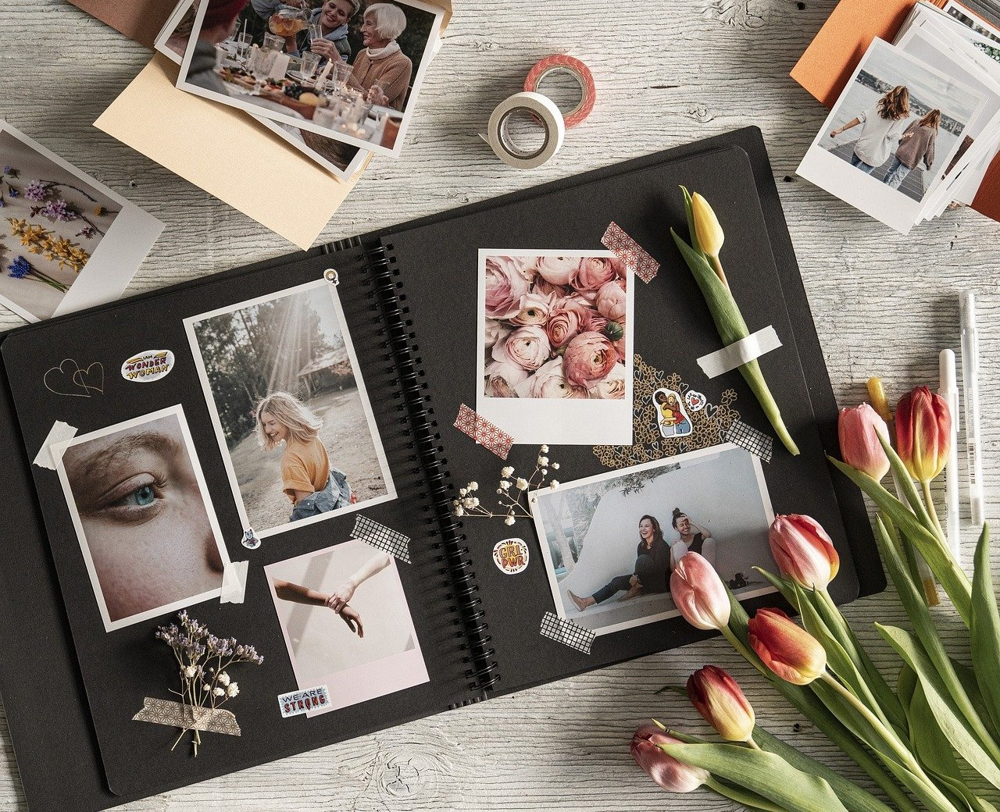
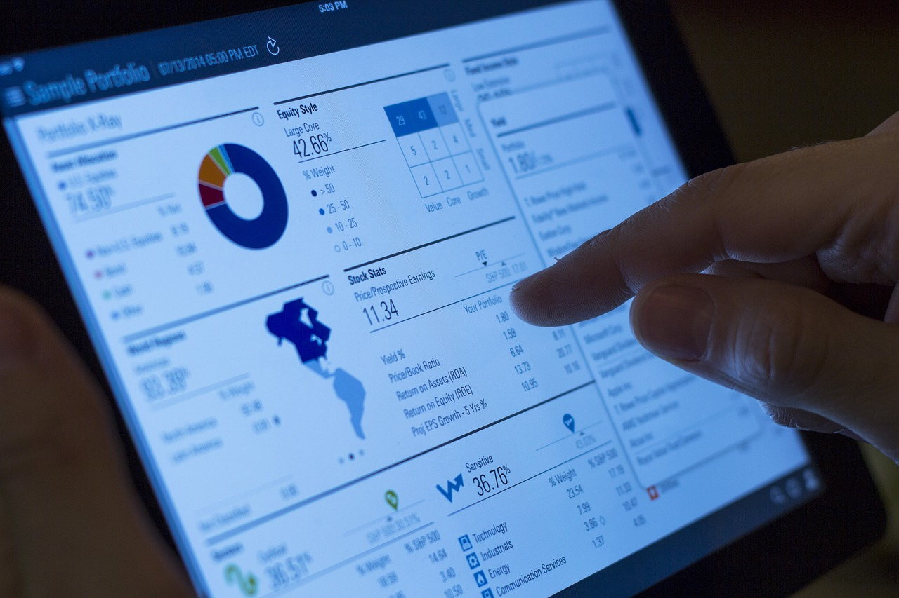

Exemple de Portofolii de Succes

Web Designer
Un portofoliu creativ, axat pe interactivitate și design responsive.

Fotograf
Lucrări artistice de calitate, cu accent pe emoție și detalii vizuale.

Manager de Proiect
Un portofoliu care evidențiază rezultate și studii de caz.